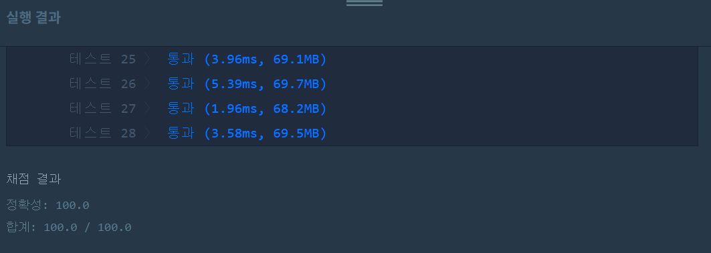

문제
https://programmers.co.kr/learn/courses/30/lessons/42890
( ᐛ )و 도전
1. 설계
- 비트마스킹을 이용하여 애트리뷰트를 선택하는 조합을 모두 구한다.
- AND 연산을 이용하여 최소성을 검사한다.
- 유일성을 검사하기 위해 레코드별로 선택한 애트리뷰트의 값을 str에 연결하고, 해시맵을 통해 중복을 확인한다.
2. 구현
1
2
3
4
5
6
7
8
9
10
11
12
13
14
15
16
17
18
19
20
21
22
23
24
25
26
27
28
29
30
31
32
33
34
35
36
37
38
39
40
import java.util.*;
/**
*
* @author HEESOO
*
*/
class Solution {
public int solution(String[][] relation) {
int col=relation[0].length;
ArrayList<Integer> result=new ArrayList<>();
for(int i=1;i<(1<<col); i++) {
if(!isMinimal(i, result)) continue;
if(isUnique(i, relation)) result.add(i);
}
return result.size();
}
public boolean isUnique(int key, String[][] relation) {
HashMap<String, String> map=new HashMap<>();
for(String[] record:relation) {
String str="";
for(int i=0;i<record.length;i++) { // record에서 애트리뷰트 선택 조합
if((key & (1<<i)) !=0 ) str+=record[i]+" ";
}
if(map.containsKey(str)) return false;
else map.put(str, str);
}
return true;
}
public boolean isMinimal(int key, ArrayList<Integer> list) {
for(int item:list) {
if((item&key)==item) return false;
}
return true;
}
}
3. 결과
 성공٩(˘◊˘)۶
4. 설명
- 비트마스킹을 이용하여 애트리뷰트를 선택할 수 있는 조합을 구한다
- 각 애트리뷰트는 선택하거나 하지 않을 두 가지 경우가 있으므로 가능한 경우의 수는 2^n-1이다(아무것도 선택하지 않는 것은 제외).
- 왼쪽 시프트 연산을 이용하여 조합을 만들고 체크한다.
- 최소성을 검사한다
- isMinimal()에서 진행한다.
- 파라미터 list는 후보키들이 들어있다.
- 만약 애트리뷰트 A,B가 후보키라면 A,B,C는 불가능하다. 즉, key에 후보키로 이루어진 값이 있는지 확인해야 한다.
- 이것은 각 자리수별로 AND연산을 하여 후보키와 같은 값이 나오는지 확인하면 된다.
- 유효성을 검사한다
- record마다 애트리뷰트 값 들을 찾아 str에 저장하고, 해시맵을 이용하여 중복되는 것이 하나라도 있으면 false를 리턴한다.
- i는 애트리뷰트 0번째 인덱스부터 끝까지 순회한다.
1<<i를 이용하여 애트리뷰트를 선택한다. 1, 10, 100, …와 같은 값을 가지므로 1인 곳이 현재 선택된 애트리뷰트다.- 현재 체크하고 있는 애트리뷰트 i가 key에 포함되어 있는 것이라면 str에 추가한다.
- str 생성이 끝나면 map을 확인하여 중복을 체크한다. 중복되는 것이 있다면 뒤의 경우는 볼 필요도 없으므로 false를 리턴한다.
- 없다면 다음 중복 체크를 위해 put한다.
- result에 후보키를 저장한다
- 두 메소드를 모두 통과하였다면 result에 저장한다.
- 이후 isMinimal()에서 다시 사용하며, result 사이즈가 총 후보키의 개수와 같다.